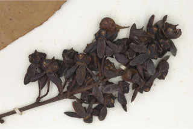
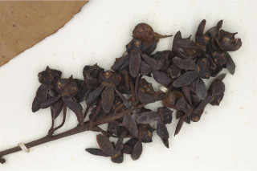

Images :
 

| Habit : | Small trees up to 5 m tall. |
| Leaves : | Leaves simple , alternate , distichous ; stipules caducous and leaving scar ; petioles 0.2-0.6 cm long, planoconvex , glabrous ; lamina 5-15 x 1.5-4.5 cm, narrow elliptic to elliptic-oblong , apex acute to acuminate with mucronate tip, base acute to attenuate , margin serrate , shining above, glabrous beneath; midrib raised above; secondary_nerves many anastomizing with double intramarginal nerves; tertiary_nerves closely reticulate . |
| Inflorescence / Flower : | Inflorescence terminal and axillary cymes ; flowers many; pedicels up to 1 cm long. |
| Fruit and Seed : | Drupe , fleshy, 5 or fewer drupes seated on the enlarged disk , purple; seeds 1 drupe . |